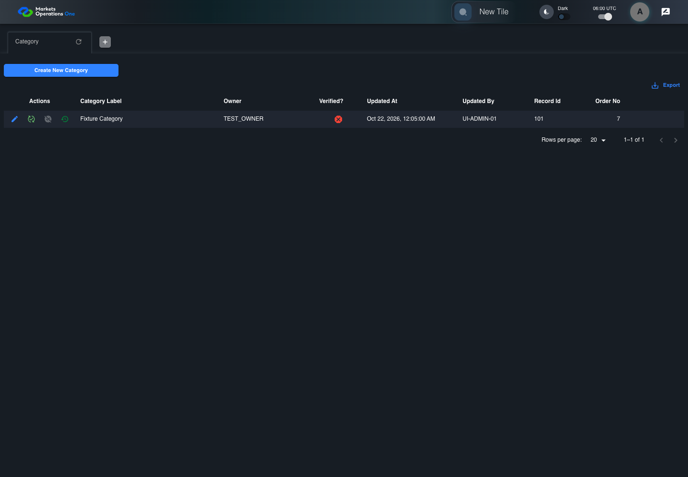
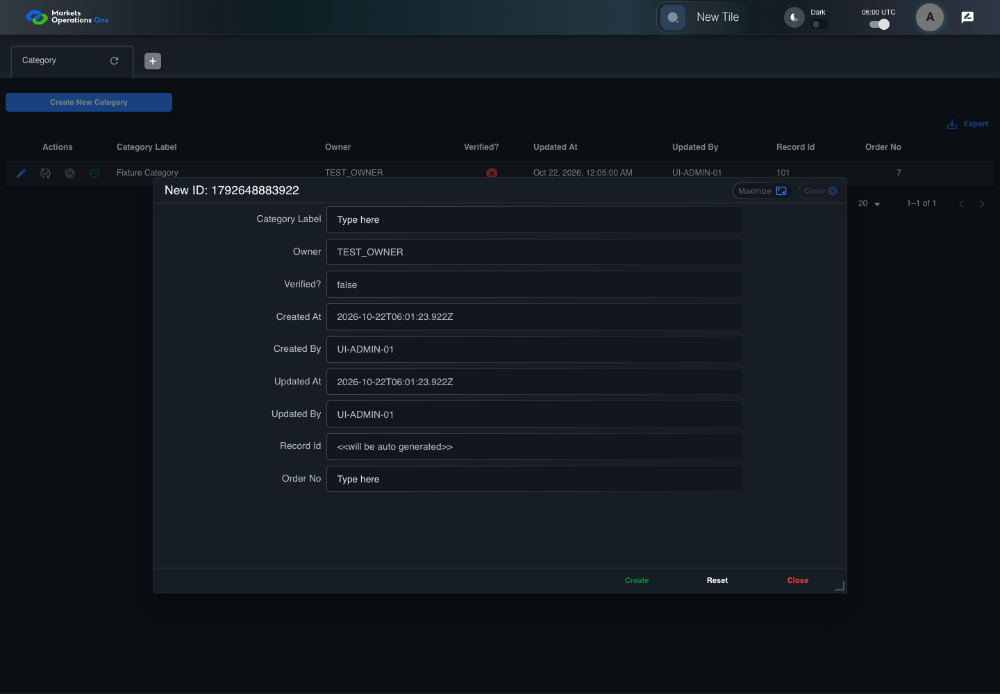
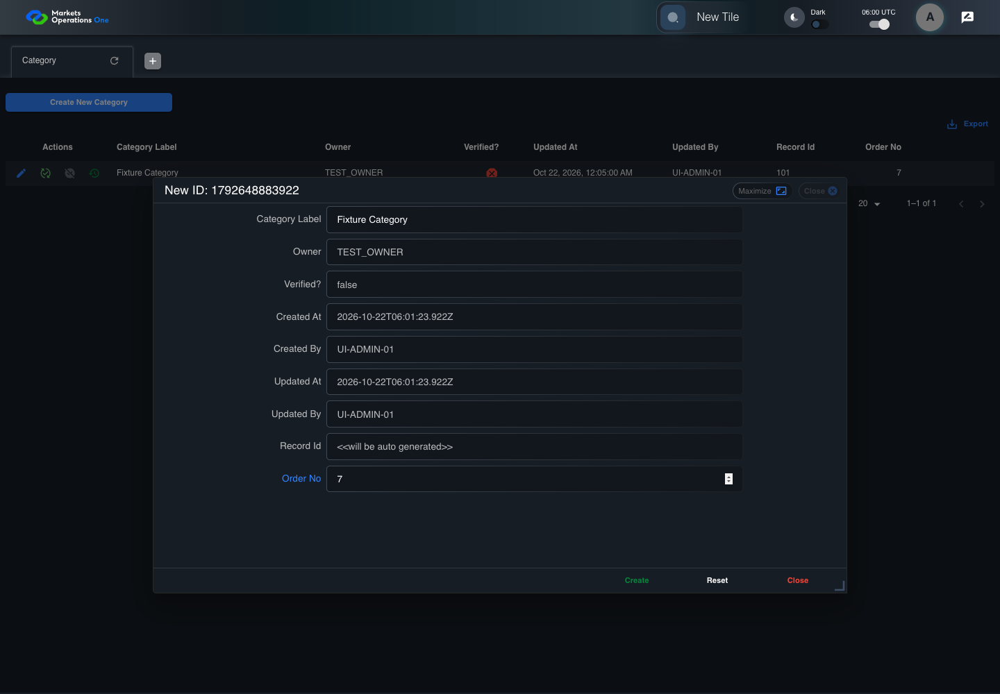
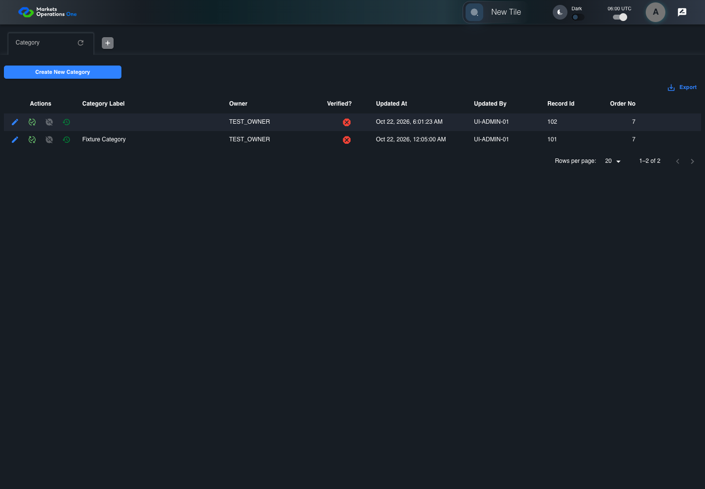

UI-ADM-FLD-001 actual administration UI with step evidence
PASS · application/run-050/ui-adm-fld-001-actual-administration-ui-with-step-evidence-d8c251aa4296-attempt-1 · ACTUAL_APPLICATION_LOCAL_SERVICES
Actual current React administration screens. Controlled browser login supplies UI-ADMIN-01 and TEST_OWNER, or the declared SUPER_USER. Controlled BFF routes return the case-declared records. Other controlled saves persist submitted field values. This run establishes frontend handling only. It does not execute BFF validation, storage, audit generation, or authorization.
2026-10-22T06:00:20.816Z to 2026-10-22T06:00:25.916Z
Assertions and result · Artifact manifest · Exact run inputs and source hashes
Result SHA-256:a767bc97fdec39b06ab0fc4f985e732f694cbcec27edcefb28ac0123a4da7c7fMachine observations
- new-record-source-identity.json
0e43fde18da479b51f42e03ec1fd4ed7f178cd245d2cad2d8c907872a2bbe9f1 - ui-origin-admin-requests.json
467872c0438e4e5b749f0f593c8ce08d43b4bc28333e84fa2f38be0d7faa1234
Screenshot capture: CAPTURED. Named frames: 9.
Step screenshot evidence: COMPLETE. 8/8 canonical steps have execution screenshots.
Canonical step timeline
Given Admin A is authenticated as fixture UI-ADMIN-01 with the case-specific permissions
Execution: PASSED.
1. step-01 Visible state after step 1: Given Admin A is authenticated as fixture UI-ADMIN-01 with the case-specific permissions
2026-10-22T06:00:23.082Z · 1440×1000
Step: /Users/lushevol/code/github/ratan-release-impact/workbench/tasks/ui-test-coverage-20261022/test-cases.md:9103
SHA-256:bf52dbfb27bcf095ed9170244b9f6b666b27049d5885851d979b7f4a7d06d515And UI-ADMIN-01 has a Category create dialog; response record 102 contains orderNo 7
Execution: PASSED.
2. step-02 Visible state after step 2: And UI-ADMIN-01 has a Category create dialog; response record 102 contains orderNo 7
2026-10-22T06:00:23.992Z · 1440×1000
Step: /Users/lushevol/code/github/ratan-release-impact/workbench/tasks/ui-test-coverage-20261022/test-cases.md:9104
SHA-256:83763336fd023b3b0ba06ea1145e83a2ee1e0c106964ce566c7591a068da055cWhen Admin A clicks button named "Create New Category" inside the "Category" administration tabpanel
Execution: PASSED.
3. step-03 Visible state after step 3: When Admin A clicks button named "Create New Category" inside the "Category" administration tabpanel
2026-10-22T06:00:24.294Z · 1440×1000
Step: /Users/lushevol/code/github/ratan-release-impact/workbench/tasks/ui-test-coverage-20261022/test-cases.md:9105
SHA-256:ca2f4ab9b07ed23306778fbccabf1b9d21bb4309a2839c1877c2efc71111cc50And Admin A enters "Fixture Category" into textbox named "Category Label" inside the new-record dialog inside the "Category" administration tabpanel
Execution: PASSED.4. step-04 Visible state after step 4: And Admin A enters "Fixture Category" into textbox named "Category Label" inside the new-record dialog inside the "Category" administration tabpanel
2026-10-22T06:00:24.412Z · 1440×1000
Step: /Users/lushevol/code/github/ratan-release-impact/workbench/tasks/ui-test-coverage-20261022/test-cases.md:9106
SHA-256:979216a3c3d625cf030b8a8fd1e7d12adf7e912098a76eacc7041e2ace090cf6And Admin A enters "7" into spinbutton named "Order No" inside the new-record dialog inside the "Category" administration tabpanel
Execution: PASSED.
5. step-05 Visible state after step 5: And Admin A enters "7" into spinbutton named "Order No" inside the new-record dialog inside the "Category" administration tabpanel
2026-10-22T06:00:24.532Z · 1440×1000
Step: /Users/lushevol/code/github/ratan-release-impact/workbench/tasks/ui-test-coverage-20261022/test-cases.md:9107
SHA-256:f3124850abeb26df8bbc3dedfc59cfe56d3e78496846c101297b2ab707da8245And the declared controlled field clock advances by 300 milliseconds
Execution: PASSED.6. step-06 Visible state after step 6: And the declared controlled field clock advances by 300 milliseconds
2026-10-22T06:00:24.911Z · 1440×1000
Step: /Users/lushevol/code/github/ratan-release-impact/workbench/tasks/ui-test-coverage-20261022/test-cases.md:9108
SHA-256:c7b9fe8068149006d48cd0d9be5c9ecdf4d9ae1ecfa17b3ec9eca3462f0ebdfdAnd Admin A clicks button named "Create" inside the new-record dialog inside the "Category" administration tabpanel
Execution: PASSED.
7. step-07 Visible state after step 7: And Admin A clicks button named "Create" inside the new-record dialog inside the "Category" administration tabpanel
2026-10-22T06:00:25.111Z · 1440×1000
Step: /Users/lushevol/code/github/ratan-release-impact/workbench/tasks/ui-test-coverage-20261022/test-cases.md:9109
SHA-256:eba6b91785b166736f5ed565136763abbcc8e5db3ed22b2489c5cbe7fe2e9710Then cell named "Order No" inside row with Record Id "102" in the "Category" administration data grid displays "7"
Execution: PASSED.
8. step-08 Visible state after step 8: Then cell named "Order No" inside row with Record Id "102" in the "Category" administration data grid displays "7"
2026-10-22T06:00:25.325Z · 1440×1000
Step: /Users/lushevol/code/github/ratan-release-impact/workbench/tasks/ui-test-coverage-20261022/test-cases.md:9110
SHA-256:eba6b91785b166736f5ed565136763abbcc8e5db3ed22b2489c5cbe7fe2e9710
Additional named frames

The final visible state after the named test assertions.
2026-10-22T06:00:25.443Z · 1440×1000Step: Test source: /Users/lushevol/code/github/ratan-release-impact/workbench/e2e/audit-specs/admin-expanded.spec.ts:15
SHA-256:
eba6b91785b166736f5ed565136763abbcc8e5db3ed22b2489c5cbe7fe2e9710Screenshots establish visible state only. Assertions and traces support functional claims.